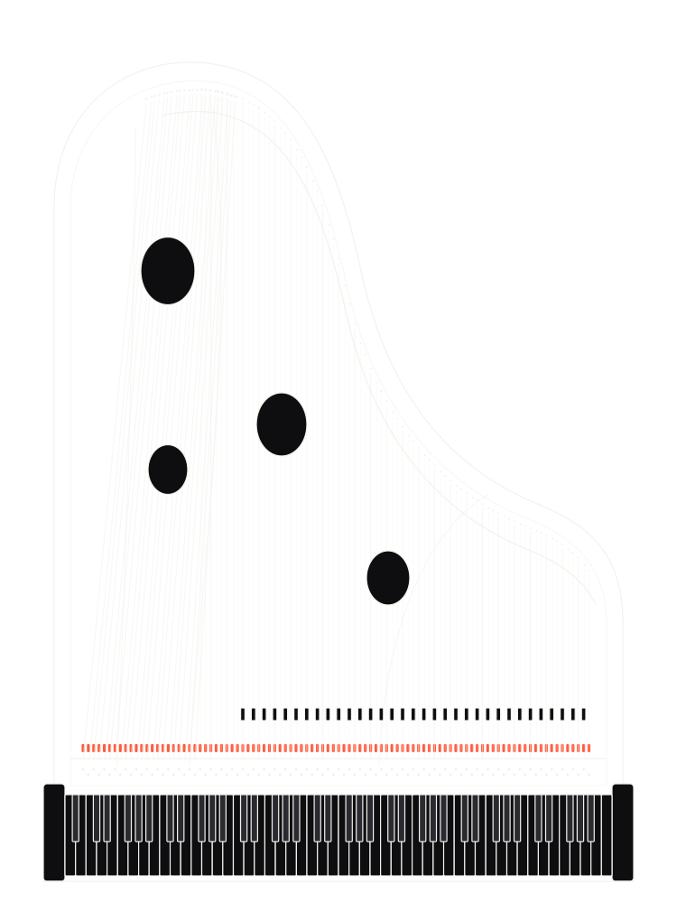
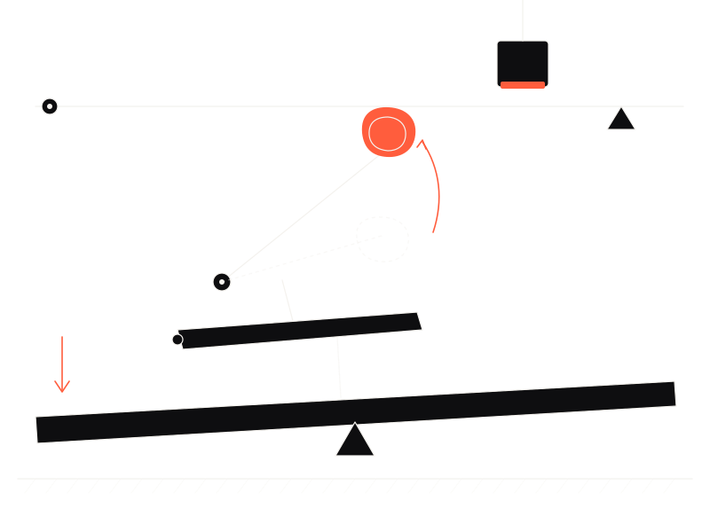
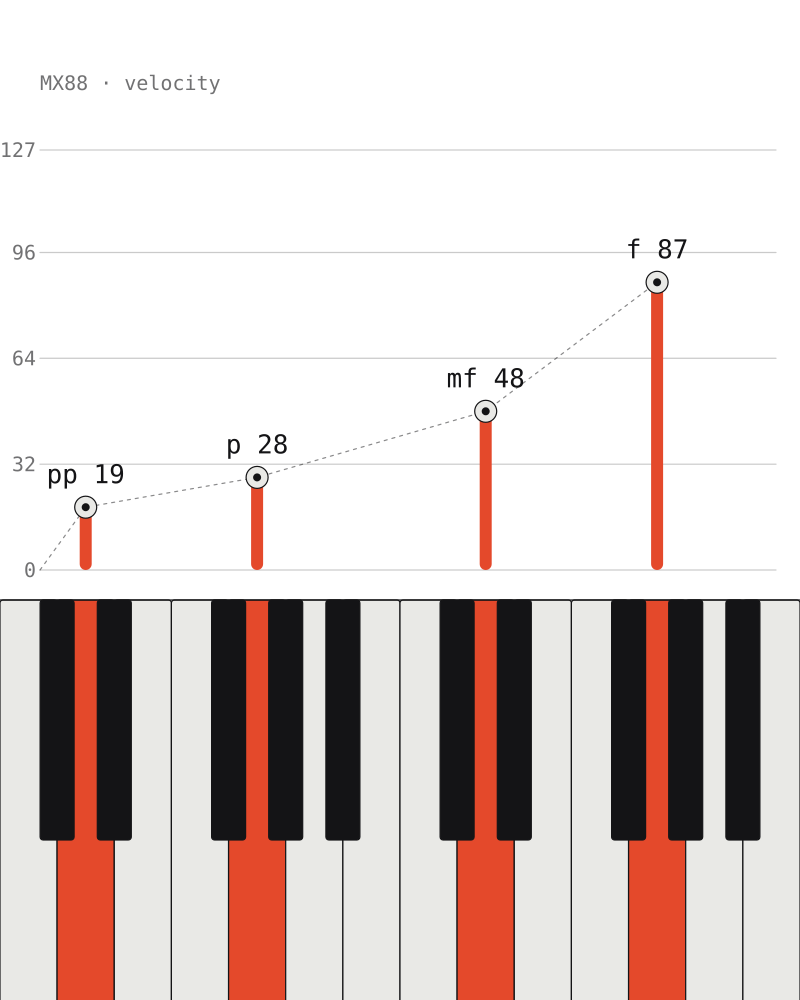
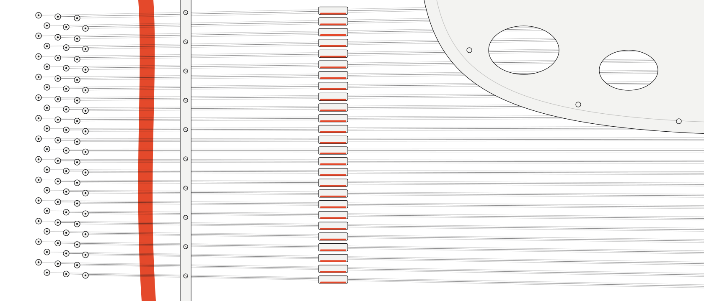

Design system
A listening room: a dark stage where sound gets measured, and quiet pages where the numbers get explained. Everything below is rendered from the live tokens in styles.css; the reasoning is in DESIGN.md.
Color
One accent, the red felt.
Type
Three families, one job each.
Space
4px base, fluid sections.
Shape
Panels soft, actions pill.
--r 14
--r-sm 10
--pill
Illustration
Drawn, not photographed.
Hairline strokes, occluding fills, accent only on felt and on what is being played. Generated by tools/landing/draw_art.py.




Components
Everything you press is a pill.
- CZ German Concert V2
- CZ Royal 3D Grand
- CZ C7 Grand Piano
- MX88 Wide
On the stage
Piano presets, calibrated against the real thing.
Play the demoDownload presets